Ο εντοπισμός σφαλμάτων (debugging) μας επιτρέπει να τρέχουμε ένα
πρόγραμμα και να παρατηρούμε τις τιμές που παίρνουν οι μεταβλητές
του προγράμματός μας καθώς εκτελείται ο κώδικας.
Χρησιμοποιούμε breakpoints μέσα στο πρόγραμμά μας, όπου θέλουμε
να σταματήσει η εκτέλεση του κώδικα για να τσεκάρουμε τις τιμές
των αντίστοιχων μεταβλητών.
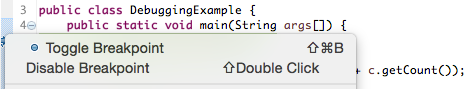
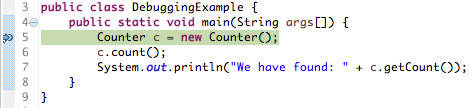
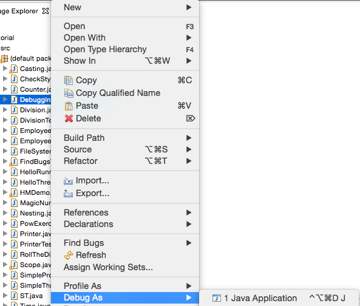
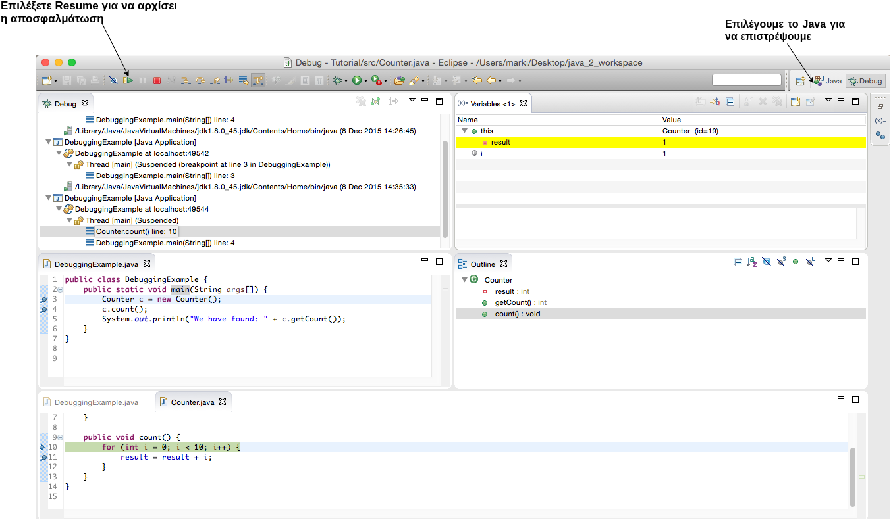
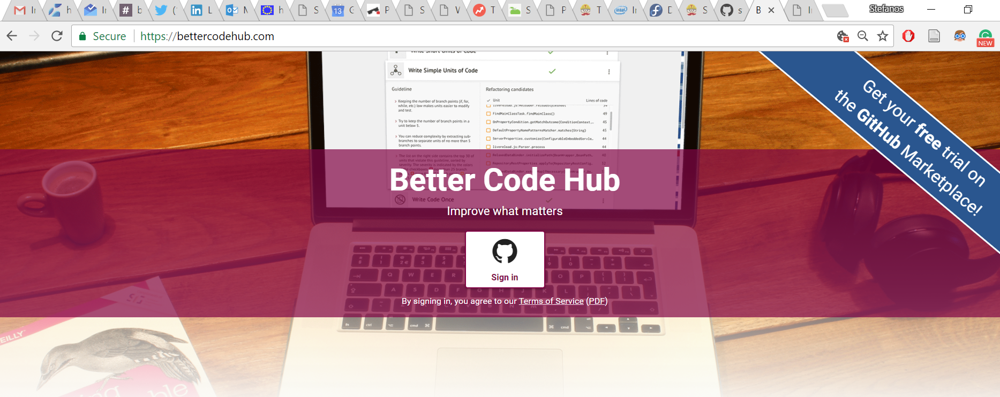
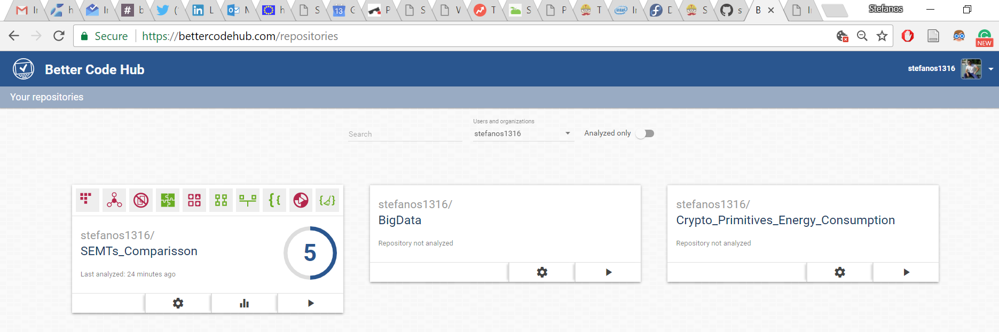
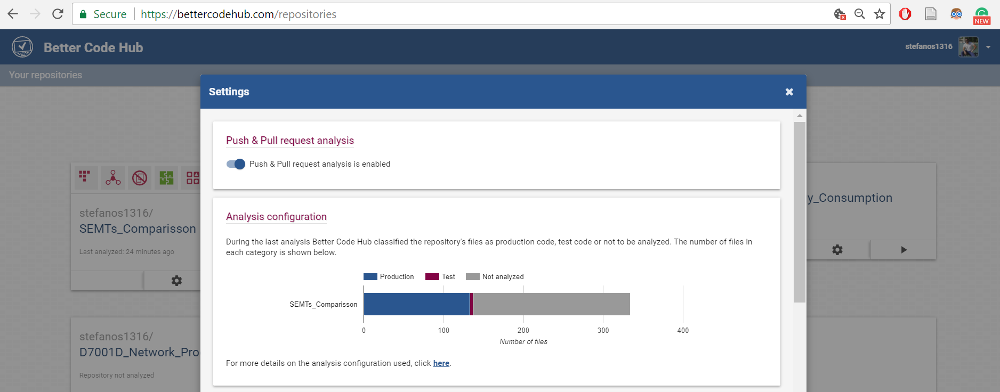
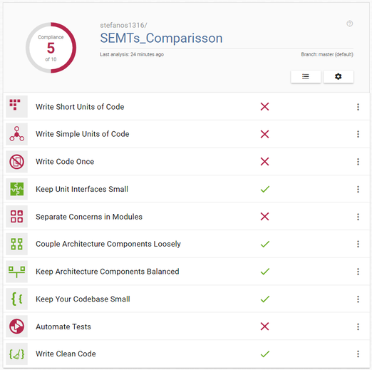
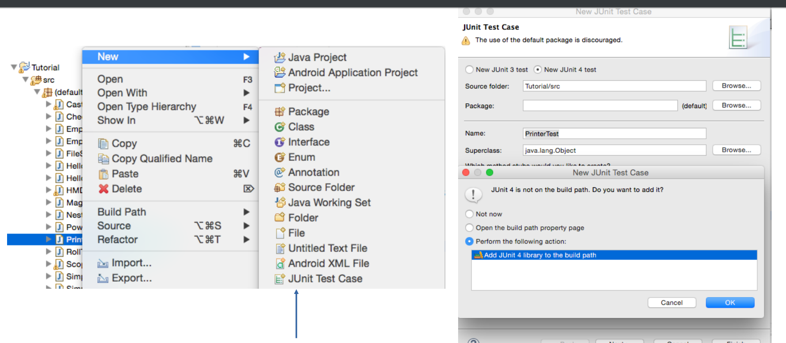
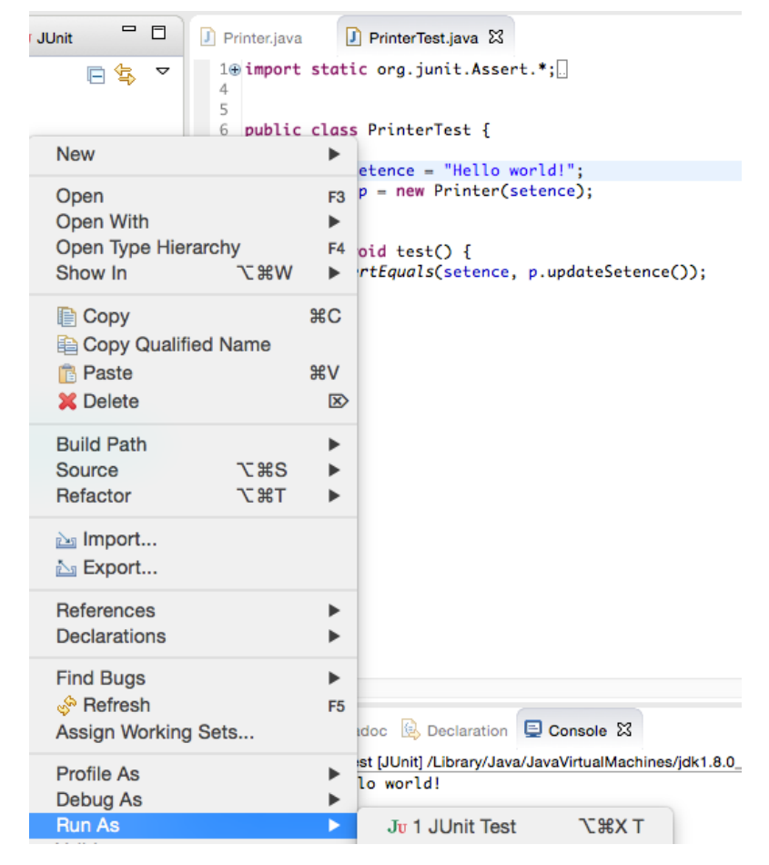
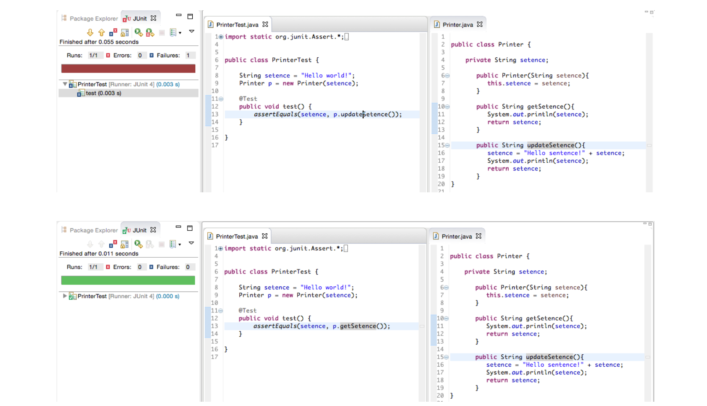